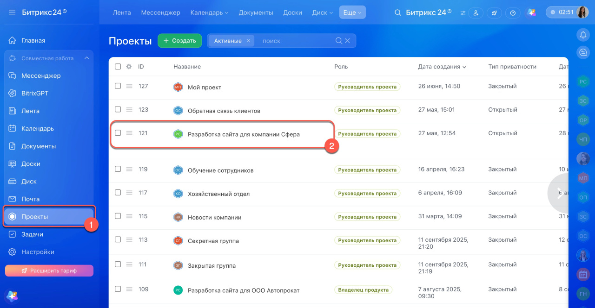
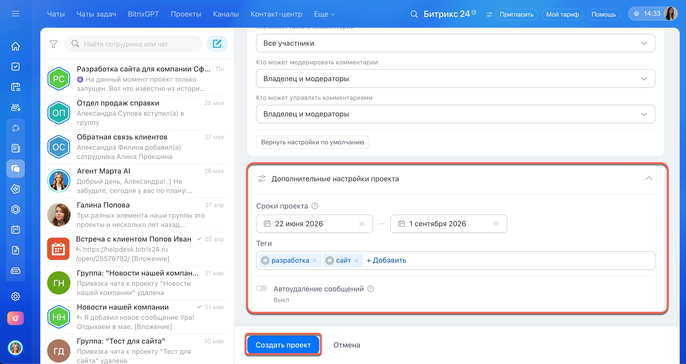
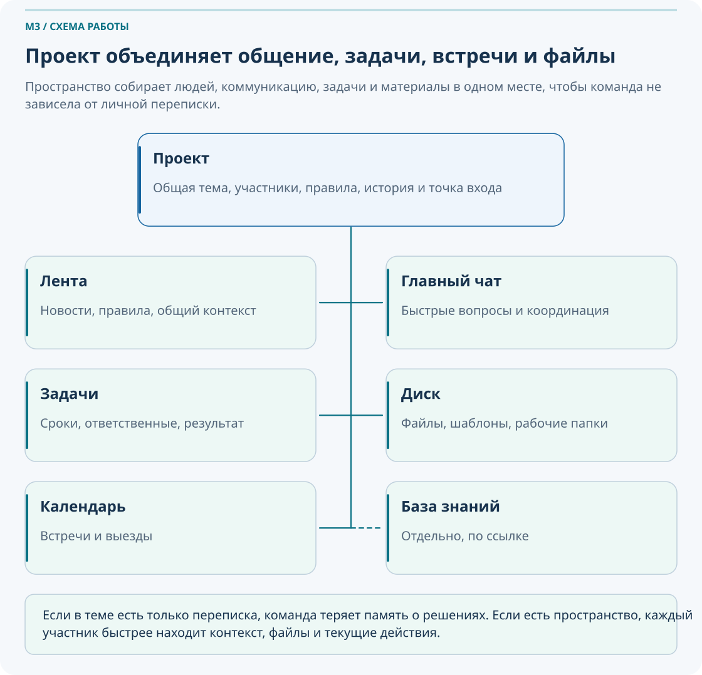
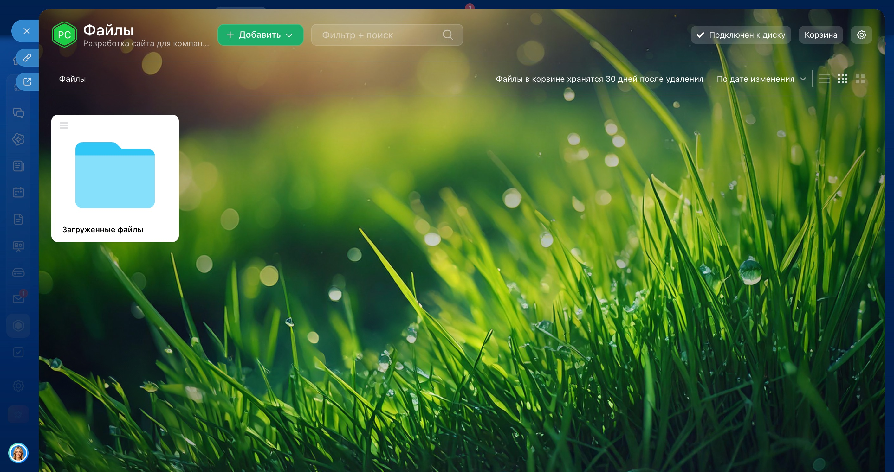
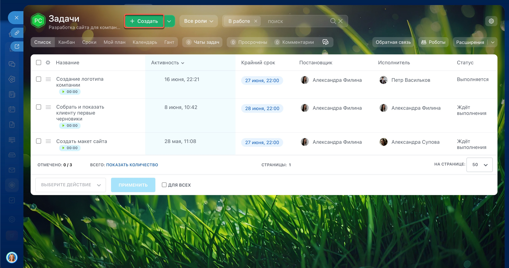
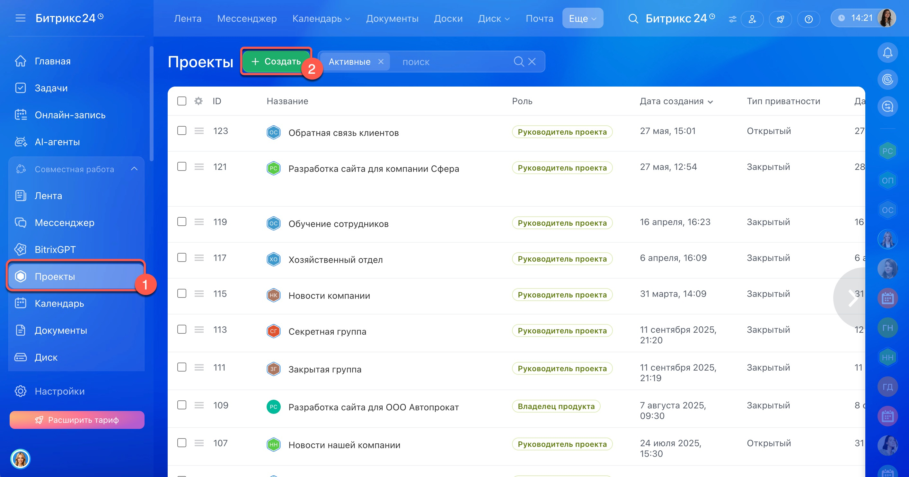
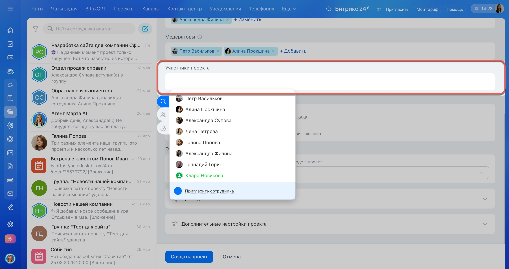
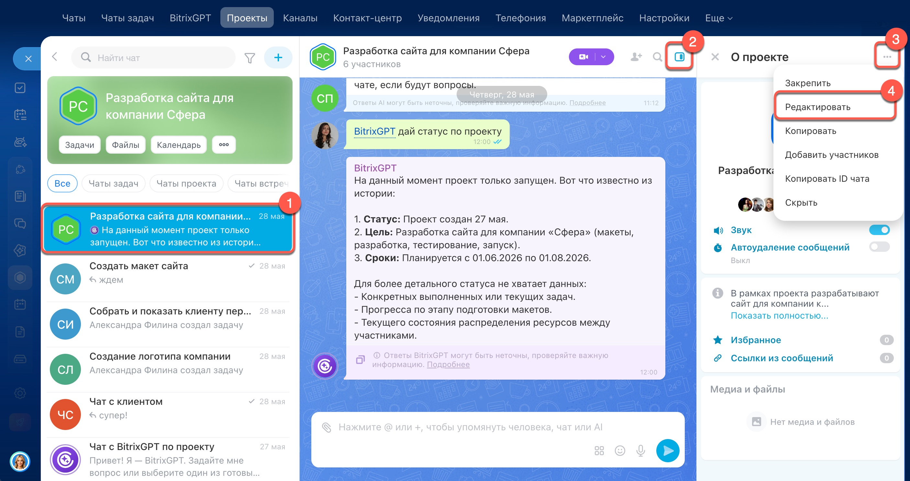
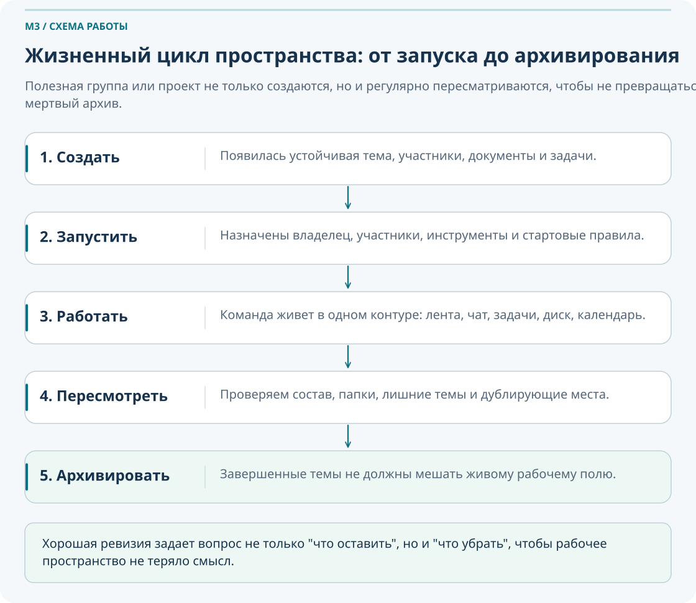

Проекты и организация совместной работы
Этот модуль переводит пользователя от хаотичного общения по чатам к понятному рабочему пространству: где есть тема, участники, документы, задачи, сроки, правила работы и единая точка входа для всей команды.
Что важно понять в M3
В этом модуле важно понять не только как создать рабочую группу, а зачем она нужна. Рабочая группа появляется там, где есть устойчивая тема: проект, объект, подразделение, процесс или временная инициатива.
Если обсуждение повторяется, появляются файлы, задачи, сроки и участники, это уже сигнал, что нужен не просто чат, а рабочее пространство.
Результат прохождения
пользователь умеет спроектировать рабочее пространство под реальную тему работы
Что стоит запомнить
Постоянная тема + несколько участников + документы + задачи + сроки = нужна рабочая группа или проект.
Паспорт модуля
Место в курсе
после M1 и M2
Входной уровень
интерфейс, лента, чаты, звонки, базовая логика задач
Целевая аудитория
Сотрудники, руководители и участники рабочих процессов, которым нужно уверенно применять материал модуля в ежедневной работе.
Итоговый результат
пользователь умеет спроектировать рабочее пространство под реальную тему работы
пользователь умеет спроектировать рабочее пространство под реальную тему работы
1. Зачем нужны рабочие группы
Здесь «рабочая группа» означает команду вокруг устойчивой темы. Для ее совместной работы создайте проект: в нем участники ведут переписку, выполняют задачи и хранят материалы.
Рабочая группа в Битрикс24 нужна тогда, когда тема живет дольше одного разговора. Внутри нее можно собрать людей, ленту обсуждений, чат, задачи, файлы, календарь и правила доступа. Это делает работу воспроизводимой: новый участник видит контекст, руководитель видит состояние, команда меньше зависит от личной переписки.
Когда все живет только в чатах
- Файлы разъезжаются по версиям.
- Поручения остаются без срока и ответственного.
- Новому сотруднику приходится восстанавливать историю вручную.
- Решения сложно найти через неделю или месяц.
Когда тема оформлена как группа или проект
- Есть единое пространство для работы по теме.
- Задачи фиксируют ответственность и сроки.
- Документы лежат в понятной структуре.
- Обсуждения отделяются от результата и контроля.

Рабочая группа снижает зависимость от конкретного человека. Даже если сотрудник ушел в отпуск, коллеги могут открыть пространство группы и быстро понять, что уже сделано, где лежат материалы и кто отвечает за следующий шаг.
Назовите 2–3 темы вашей работы, которые повторяются из недели в неделю и уже не помещаются в одном чате.
Проверьте, есть ли по этим темам документы, поручения, сроки и несколько участников. Если да, тема уже просится в группу или проект.
Выберите одну тему и кратко обоснуйте, почему ей уже недостаточно переписки в чате.
2. Проект, чат или публикация: что выбрать
В обновленной облачной версии для постоянной работы отдела, временной инициативы и взаимодействия с подрядчиками используется единый формат «Проекты». Группы и коллабы преобразуются автоматически, с сохранением данных. Не создавайте копию существующего пространства только ради нового названия. Понятие проекта с конечной целью остается полезным для организации работы, но больше не определяет отдельный тип кнопки в интерфейсе.
| Ситуация | Что выбрать | Почему |
|---|---|---|
| Постоянное обсуждение работы отдела | Проект для постоянной темы | Тема устойчивая, без фиксированной даты завершения |
| Внутреннее тематическое пространство | Проект для постоянной темы | Нужно собрать людей, новости, документы и регламенты |
| Объект или инициатива с этапами, сроками и ответственными | Проект | Нужен фокус на задачах, сроках и результате |
| Разовая короткая коммуникация | Чат | Нет смысла создавать отдельное пространство |
| Общее объявление или единая информация | Лента | Важно донести сообщение и сохранить его видимым для группы |
Постоянная тема
Отдел ПТО, служба снабжения, тема «Регламенты и шаблоны», постоянная рабочая область подразделения.
Проект
Строительство объекта, запуск филиала, внедрение нового процесса, временная инициатива с финальным результатом.
Чат
Короткое уточнение, быстрый вопрос, срочное согласование на несколько минут.
Лента
Старт работ, официальное сообщение, публикация решения, объявление для всех участников.

Создавать отдельный проект для короткого уточнения или вести многомесячный объект только в переписке без задач, файлов и ответственных. В обоих случаях команда теряет управляемость.
Распределите три рабочие ситуации между публикацией, чатом и проектом. Для проекта уточните сценарий: постоянная тема или работа с конечным результатом.
Для каждой ситуации добавьте один критерий выбора: срок, длительность темы, состав участников или необходимость контроля.
Для временного проекта задайте результат и срок завершения; для постоянной темы определите правила работы и дату следующей ревизии.
3. Из чего состоит рабочая группа
Рабочая группа полезна не названием, а содержанием. Важно понимать, какую роль играет каждый встроенный инструмент и что не стоит смешивать между собой.

Лента группы
Подходит для официальных сообщений, новостей, решений по теме и важных публикаций, которые должны остаться в истории.
Чат группы
Нужен для оперативных вопросов, быстрых уточнений и короткой координации между участниками.
Задачи
Фиксируют действия, сроки, ответственных и результат. Если нужно контролировать выполнение, это уже задача, а не переписка.
Диск группы
Хранит документы, шаблоны, акты, схемы и материалы по теме в одной логике папок.
Календарь
Помогает видеть выезды, встречи, контрольные точки, дедлайны и даты проверки результатов.
Участники и роли
Определяют, кто управляет пространством, кто публикует сообщения, кто отвечает за порядок и кто просто участвует в работе.

В новом проекте нельзя создавать встроенную базу знаний, вики, списки и фотогалерею. Ранее созданные материалы остаются доступны с ограничениями. Новые инструкции ведите в отдельной Базе знаний 2.0 или другом утвержденном хранилище и размещайте ссылку в проекте; порядок работы описан в M6.
Хорошая логика: обсуждение не равно исполнение
| Что происходит | Где лучше вести | Что будет результатом |
|---|---|---|
| Сообщить старт работ | Лента | Общий контекст для участников |
| Быстро уточнить деталь | Чат | Оперативный ответ |
| Назначить действие и срок | Задача | Контроль выполнения |
| Положить рабочие материалы | Диск | Единый источник документов |

Возьмите пять типовых рабочих действий и распределите их по инструментам группы.
Определите, какой инструмент у вас чаще всего подменяют чатом, и чем это мешает работе.
Предложите одно правило команды, которое поможет перестать держать документы и поручения только в переписке.
4. Создание и запуск проекта
- Откройте Проекты → Создать. Альтернативный путь: Задачи → Проекты.
- Укажите название, цель, владельца, модераторов и участников. Выберите открытый или закрытый тип доступа.
- Для временной работы укажите даты в дополнительных настройках. Создайте проект и проверьте главный чат, файлы и задачи.
- Опубликуйте правила работы и проверьте доступ от лица участника с обычными правами.
Проекты доступны на коммерческих тарифах. Если создание недоступно, выполните проектирование на бумаге и уточните права у администратора. Официальная инструкция создания проекта.
Создать пространство технически несложно. Основная ценность в том, чтобы запустить его правильно: сразу определить назначение, владельца, состав участников, инструменты и базовые правила работы.
Проверяем, есть ли постоянная тема, участники, документы и задачи.
Определяем, нужен ли проект, отдельный чат или публикация.
У пространства должен быть человек, отвечающий за порядок и развитие.
Оставляем только то, что реально будет использовать команда.
Закрепляем правила в главном чате проекта; при необходимости публикуем их в ленте.

Шаблон запуска проекта
| Элемент | Что определить до запуска |
|---|---|
| Название | Понятное имя без двусмысленности: объект, отдел, тема или проект |
| Назначение | Зачем существует пространство и какой тип работы туда относится |
| Границы | Что входит в тему, а что остается вне этой группы |
| Владелец | Кто отвечает за состав участников, порядок и жизненный цикл |
| Модераторы | Кто помогает поддерживать структуру и правила |
| Участники | Кому действительно нужен доступ для работы |
| Тип доступа | Открытый проект виден сотрудникам; закрытый доступен приглашенным. Настройки инструментов проверяются отдельно. |
| Инструменты | Главный чат, задачи, файлы, календарь, лента; инструкции в отдельной базе знаний |
| Структура папок | Как хранятся материалы и где искать нужные документы |
| Правила коммуникации | Что публикуется в ленте, что обсуждается в чате, когда создается задача |
| Дата ревизии | Когда команда пересмотрит состав участников, структуру и актуальность пространства |
Хорошая первая запись в ленте обычно содержит цель пространства, правила использования, ссылки на ключевые папки, ответственных и способ фиксации результатов через задачи.
Заполните шаблон запуска для одной реальной темы вашей команды хотя бы в черновом виде.
Проверьте, есть ли у выбранной группы владелец, правила общения и дата пересмотра состава.
Составьте текст первой публикации в ленте: что здесь происходит, где лежат файлы, когда создаем задачи.
5. Роли, доступы и внешние участники
Пространство без правил доступа быстро превращается либо в хаос, либо в закрытую коробку, которой никто не пользуется. В M3 важно не только перечислить роли, но и показать, кто реально поддерживает рабочий порядок.
| Роль | Что делает | На что обратить внимание |
|---|---|---|
| Владелец | Отвечает за назначение пространства, состав участников, настройки и жизненный цикл | У группы всегда должен быть явный владелец |
| Модератор | Помогает поддерживать порядок, может модерировать часть работы внутри пространства | Подходит для руководителей направлений и координаторов |
| Участник | Работает с материалами и задачами в рамках выданных прав | Не всем нужен полный доступ ко всем инструментам |
| Внешний участник | Используется только там, где компания реально ведет внешнее взаимодействие в разрешенном формате | Важно сверяться с актуальной политикой портала и правами доступа |

Внешних участников приглашайте гостями в проект. Перед приглашением проверьте роль гостя и доступные материалы. Что изменилось в группах и коллабах.
Права проекта определяют доступ владельца, модераторов, сотрудников и гостей к приглашениям, задачам и ленте. Добавление сотрудника в групповой чат проекта может дать ему доступ ко всему проекту: читайте предупреждение при приглашении. Чат отдельной задачи не означает членство во всем проекте. Настройка прав проекта.

Мини-чек по доступам
- Кто может приглашать и удалять участников?
- Кто отвечает за правила публикаций и порядок в ленте?
- Кому нужен доступ к редактированию документов, а кому только просмотр?
- Кто может создавать задачи внутри пространства?
- Есть ли внешние участники, и действительно ли им нужен именно этот формат?
Для одной рабочей группы определите владельца, модератора и обычных участников.
Подумайте, каким участникам нужен полный доступ к документам, а кому достаточно чтения.
Если по теме работают подрядчики или клиенты, опишите, почему нужен внешний формат и какой механизм в вашей компании считается допустимым.
6. Жизненный цикл и структура групп в компании
Полезная группа не должна висеть в портале годами без владельца и смысла. Ее нужно не только создать, но и вести, пересматривать и при необходимости архивировать.
Появилась устойчивая тема и понятное назначение пространства.
Добавлены участники, включены инструменты, опубликованы правила.
Обсуждения, файлы, задачи и календарь живут в одном контуре.
Проверяем состав, структуру, лишние папки и неактуальные темы.
Если тема завершена, пространство не должно засорять рабочее поле.

Пример структуры папок
Плохая структура
- Одна папка «Документы» для всего подряд.
- Неясно, где актуальные версии файлов.
- Смешаны шаблоны, акты, переписка и черновики.
Хорошая структура
01_Регламенты и вводные02_Рабочие документы03_Шаблоны04_Архив завершенных материалов
Выберите одну существующую группу вашей компании и проверьте: есть ли владелец, понятное название, актуальные участники, логика папок, стартовая публикация с правилами и критерии завершения или пересмотра.
Ответьте на три вопроса: тема повторяется, участников больше двух, нужны файлы и задачи? Если да, группа или проект вероятно нужны.
Нарисуйте простую структуру папок для одного объекта, подразделения или проекта.
Проведите аудит существующей группы и выпишите минимум три улучшения: участники, права, папки, правила или архивирование.
7. Сквозная практика: «От хаоса в чатах к рабочему пространству»
Этот маршрут проходит через весь модуль и показывает, как команда переходит от бессистемной переписки к нормальной организации совместной работы.
Проблема
Обсуждение по объекту или теме идет в личных чатах, материалы расползаются по сообщениям.
Признаки перегруза
Появились поручения, несколько участников, повторяющиеся вопросы, версии файлов и сроки.
Выбор формата
Команда решает: нужна рабочая группа или проект, а не еще один новый чат.
Назначение владельца
Определяется человек, который отвечает за запуск и поддержание пространства.
Состав участников
Добавляются только те, кто реально работает по теме или управляет ею.
Настройка инструментов
Включаются лента, чат, задачи, диск и календарь по реальной потребности команды.
Запуск правил
В первой публикации фиксируется, где новости, где быстрые вопросы и когда создается задача.
Ревизия через месяц
Проверяем состав, структуру документов, лишние папки и дублирующие пространства.
Рабочая группа не создается «на всякий случай». Она создается тогда, когда работа по теме уже требует памяти, структуры, ответственности и общей точки входа.
8. Что делать, если…
Если непонятно, нужна ли вообще группа
Проверьте пять признаков: тема повторяется, участников несколько, появляются документы, нужны задачи и есть сроки. Если совпало хотя бы четыре пункта, чат уже недостаточен.
Если группа создана, но ей никто не пользуется
- Проверьте, была ли опубликована стартовая запись с правилами.
- Убедитесь, что назначен владелец.
- Оставьте только нужные инструменты, чтобы интерфейс не пугал лишним.
- Проведите первый рабочий сценарий в главном чате и задачах проекта; закрепите ссылки на файлы.
Если в группе слишком много лишних участников
Проведите ревизию состава: кто работает по теме, кто только читает, а кто давно не участвует. Избыточный состав мешает и коммуникации, и безопасности доступа.
Если документы по теме все равно продолжают слать в чат
Зафиксируйте простое правило: чат для оперативного вопроса, Диск для хранения, задача для исполнения. После этого в первой же рабочей ситуации напомните правило и дайте ссылку на нужную папку.
Если после обновления пропали группы и коллабы
Откройте раздел «Проекты» и найдите прежнее пространство по названию. В новой версии группы и коллабы преобразованы в проекты; возвращаться к старому формату и переносить данные вручную не нужно. На портале с прежним интерфейсом используйте его текущие разделы.
Если тема завершена, но пространство осталось жить
Запланируйте ревизию и архивирование. Завершенные темы не должны мешать рабочему полю и создавать ложное ощущение активности.
9. Типичные ошибки новичков
Создать пространство без понятного назначения и надеяться, что команда сама разберется, как им пользоваться.
Путать чат с рабочей группой и продолжать хранить важные решения только в сообщениях.
Не назначить владельца, из-за чего никто не отвечает за участников, папки и правила.
Подключить все инструменты сразу, хотя половина из них команде не нужна на старте.
Не пересматривать старые группы, из-за чего портал заполняется дублями и мертвыми пространствами.
Неправильно организовать работу с внешними участниками и не свериться с актуальной моделью приглашения гостей в проект.
10. Самопроверка
Ответьте на вопросы ниже. Они проверяют не только знание интерфейса, но и понимание организационной логики рабочих пространств.
Вопросы
- Какие признаки показывают, что теме уже недостаточно одного чата?
- Где в новой версии найти прежние группы и коллабы?
- В какой ситуации лучше выбрать ленту, а не чат?
- Зачем нужен владелец группы?
- Почему задачи внутри группы важнее устных договоренностей в переписке?
- Что должно быть в стартовой публикации после запуска новой группы?
- Почему нельзя считать добавление участника в группу автоматическим доступом ко всему?
- Когда нужно пересматривать или архивировать пространство?
- Чем хорошая структура папок отличается от плохой?
Проверить свои ответы
- Повторяемость темы, несколько участников, документы, поручения, сроки и потребность в общей памяти команды.
- В разделе «Проекты»: прежние пространства преобразованы с сохранением данных. Постоянная работа отдела и временный проект используют один формат с разными организационными правилами.
- Когда нужно сделать официальную публикацию или дать общий контекст всем участникам.
- Он отвечает за назначение пространства, состав участников, правила, структуру и жизненный цикл.
- Потому что задача фиксирует ответственного, срок, результат и позволяет контролировать выполнение.
- Цель пространства, правила использования, ссылки на ключевые материалы, ответственные и логика перехода к задачам.
- Права на инструменты и материалы могут настраиваться отдельно; доступ нужно проверять осознанно.
- Когда тема завершена, состав устарел, структура стала неудобной или пространство дублирует другое.
- В хорошей структуре папок понятно, где лежат актуальные материалы, шаблоны и архив, а не все сложено в одну общую корзину.
11. Итоговое практическое задание
Сценарий: у вашей команды есть тема, по которой сейчас все обсуждения идут в чатах, документы пересылаются вручную, поручения теряются, а новый сотрудник не понимает, где искать актуальные материалы. Нужно спроектировать правильное рабочее пространство в Битрикс24.
- Определите, нужен ли проект, чат или публикация. Сначала проверьте, нет ли уже подходящего проекта.
- Сформулируйте назначение пространства в одном абзаце.
- Укажите владельца, модераторов и участников.
- Выберите нужные инструменты проекта. Если нужна база знаний, укажите ссылку на отдельный раздел и проверьте доступ к нему.
- Предложите структуру папок на Диске.
- Составьте текст первой публикации в ленте.
- Опишите одно правило: когда обсуждение обязано превращаться в задачу.
- Укажите дату ревизии пространства через месяц.
Критерии успешного прохождения
- Сотрудник может объяснить, почему выбран именно этот формат пространства.
- Назначение группы или проекта сформулировано понятно и без размытых формулировок.
- Есть владелец и логика распределения ролей.
- Инструменты выбраны по смыслу, а не «все сразу».
- Папки на Диске имеют понятную структуру.
- В стартовой публикации зафиксированы правила работы.
- Понимание перехода от обсуждения к задаче выражено явно.
- Учтен жизненный цикл: создание, работа, ревизия, архивирование.